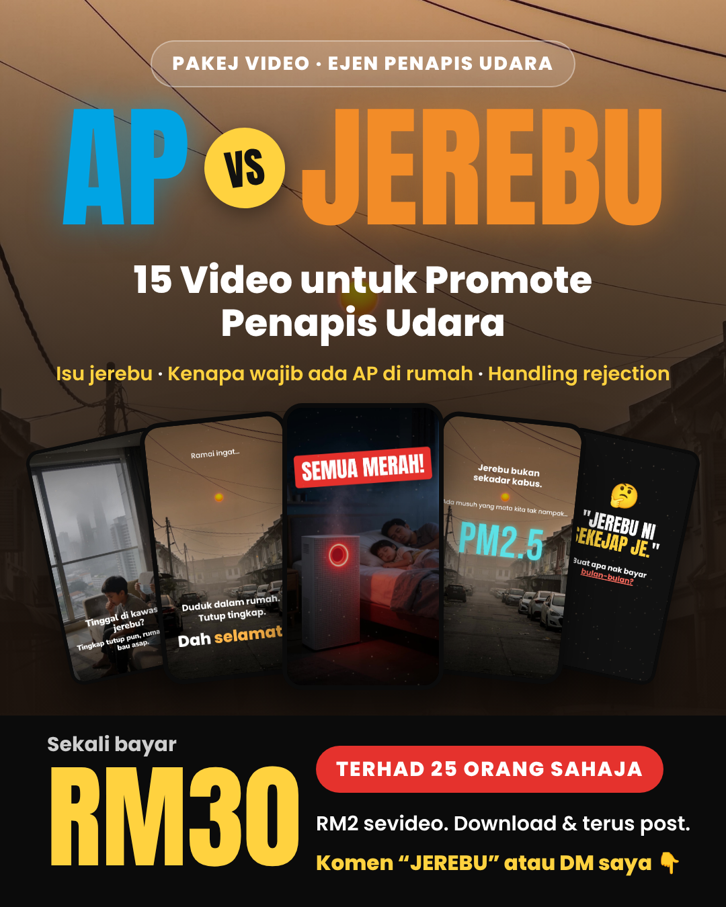

Hari 1 · 8.30 malam
Pelancaran (poster utama)

Copy post · 427/500 aksara
Jerebu dah masuk. Orang tengah cari air purifier. Tapi feed ejen penapis udara masih kosong? 😅 Saya dah siapkan pakej video AP vs JEREBU: 15 video untuk promote penapis udara. ✅ Isu jerebu & PM2.5 ✅ Kenapa wajib ada AP di rumah ✅ Handling rejection "buat apa bayar bulan-bulan?" ✅ Spek 6 model + iklan 30 saat Siap VO Bahasa Melayu, format 9:16. Download, terus post. RM30 je. Terhad 25 orang. Komen "JEREBU" atau DM saya 👇